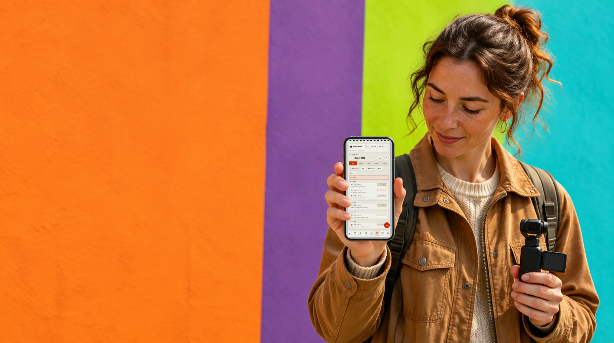
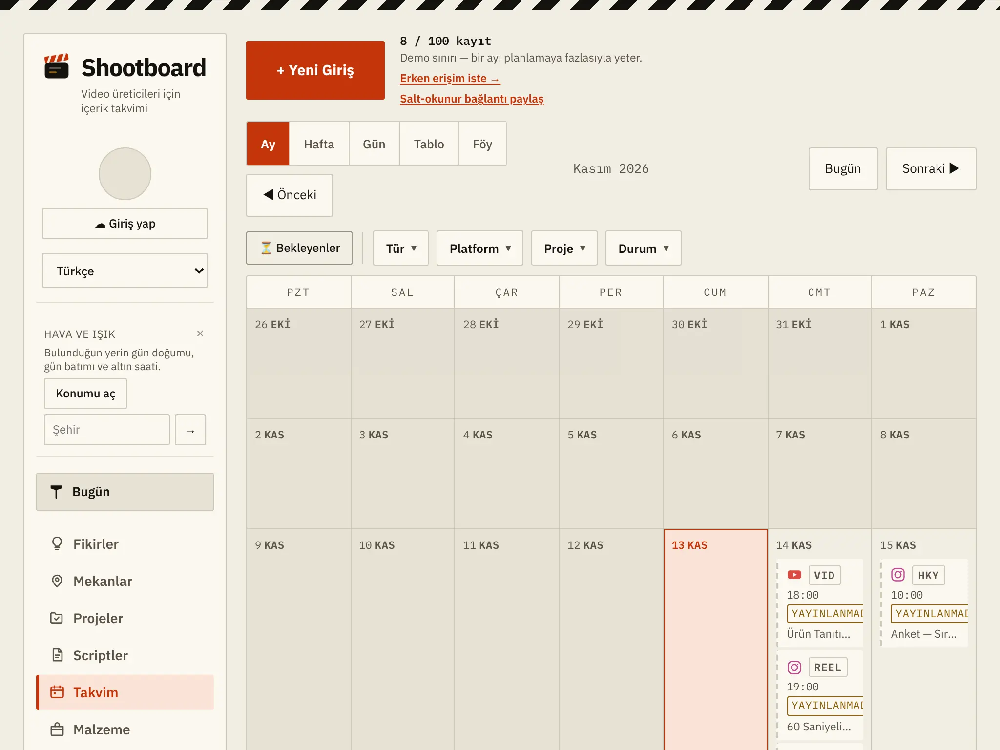
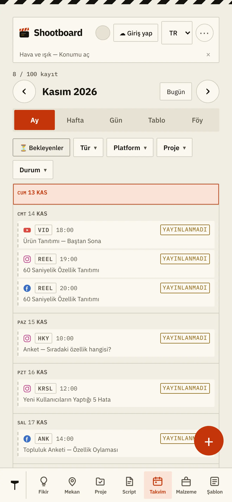

Takvim
Ay, hafta, gün, tablo ve föy. Bekleyenler üstte; giden iş yeşile dönüyor.

Aynı görüntü Reel olarak, Short olarak, carousel ve hikâye olarak çıkıyor — her birinin kendi açıklaması, kapak yazısı ve saati var. Shootboard hangisinin gittiğini, hangisinin beklediğini tutar.
Hesap açmadan da çalışır — takvimin o tarayıcıda kalır. Giriş yaparsan aynı plan telefonuna da gelir.

Plan yaptığın yerler
Shootboard planı tutar, yayınlayan sensin. Tek istisna, varsayılan olarak kapalı: kendi hesabını bağlarsan Instagram ve Facebook saatinde çıkabilir.
Çalışma biçimi
Çoğu kişi bunu takip etmek için bir tabloya, bir not defterine ve üç ayrı sohbete birden bakıyor. Sıradan bir takvimden farkı şu: Shootboard paylaşımın arkasındaki üretim işini de tutuyor — script yazıldı mı, çekim yapıldı mı, kurgu bitti mi, izin alındı mı.
VIDYouTube — uzun video
KISAYouTube — Short
REELInstagram — Reel
KRSLInstagram — carousel
HKYHikâye — iki platform
METİNThreads — metin postu

Adres, izin notu, "burada dikkat edilecekler" ve o günün altın saati aynı kayıtta.
On iki parça, tek pano
Ay, hafta, gün, tablo ve föy. Bekleyenler üstte; giden iş yeşile dönüyor.
Aklına gelen, çekime dönmeden önce burada bekliyor.
Adres, izin durumu, park notu ve o yerin gün doğumu–gün batımı.
Bir çekimden çıkan tüm paylaşımlar aynı projeye bağlı duruyor.
Metin, kayıtla aynı yerde. Çekim günü aramak gerekmiyor.
Yanına alacakların ve orada yapacakların hazır listelerle.
Üretim akışı
Ağır bir proje yönetimi yazılımı değil. Her kaydın hangi adımda olduğu tek bakışta görünüyor.

Hava ve ışık
Mekânın gün doğumu, gün batımı ve altın saati hesaplanıyor — çekim gününü oraya göre koyabiliyorsun. Hangi günün hangi saati, kaydın içinde.
Masada ve sahada
Giriş yaparsan aynı plan ikisinde de aynı. Hesapsız kullanırsan takvimin o tarayıcıda kalır — hiçbir şey zorunlu değil.


Bir çekimi panoya koyuyorsun, çıkacak paylaşımları altına diziyorsun.
Sınırı baştan yazalım
Üçü de bilinçli tercih. Sonradan şaşırmayasın diye en başta yazıyoruz.
Ana işi planı tutmak; yayınlayan sensin. Tek istisna, varsayılan olarak kapalı: kendi hesabını bağlarsan Instagram ve Facebook saatinde çıkabilir. Platform kuralı değiştiğinde çalışmaz hâle gelen araçlardan olmak istemedik.
İzlenme ve beğeni saymaz. O işi platformların kendi araçları zaten yapıyor.
Yedi adımlık bir üretim akışı var, o kadar. Kurulum yok, eğitim yok.
Fiyatlar
Tarayıcıda, hesap açmadan deneyebilirsin. Planlar ve neyin neye dahil olduğu ayrı sayfada yazılı.
Google ile gelirsin, şifrenle girersin ya da e-posta adresine gelen bağlantıya tıklarsın. İlk girişte hesabın kendiliğinden açılır; şifreni hemen ardından belirleyebilirsin.
Bir dakika sürer. Takvimin sonra her cihazda yanında olur.
Adresi doğrulamak için tek bir e-posta gönderiyoruz. Hesap açarak Kullanım Şartları'nı ve Gizlilik Politikası'nı kabul etmiş olursunuz.
Tekrar hoş geldin.
Kayıt gerekmiyor. Açtığın anda dolu bir örnek hafta seni karşılıyor; beğenmezsen tek düğmeyle siliyorsun.